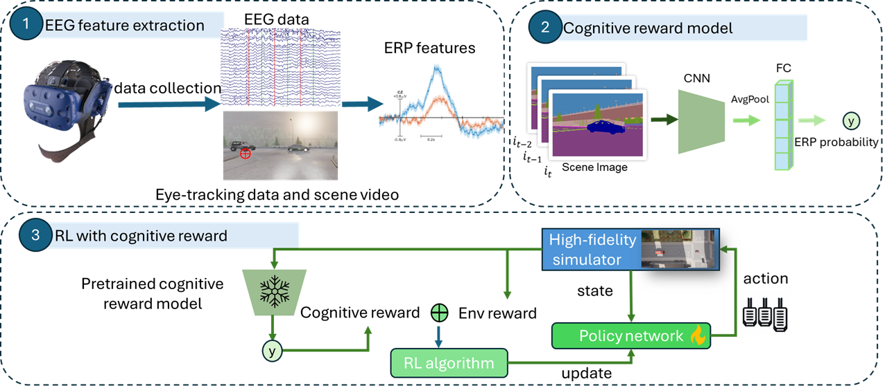

Recent advancements in computer vision have accelerated the development of autonomous driving. Despite these advancements, training machines to drive in a way that aligns with human expectations remains a significant challenge. Humans possess sophisticated cognitive systems capable of rapidly interpreting scene information and making decisions in complex environments. In this work, we propose an electroencephalography (EEG)-guided decision-making framework to incorporate human cognitive insights into reinforcement learning for autonomous driving. EEG signals were collected from 20 participants in a realistic driving simulator and event-related potentials (ERP) were analyzed in response to sudden environmental changes. We train a neural network to predict ERP strength directly from visual scene information and integrate this predicted cognitive signal into the reward function of a reinforcement learning policy. Experimental results show that the proposed neuro-cognitive reward modeling framework improves collision avoidance and driving safety. These results demonstrate the potential of leveraging human neuro-cognitive feedback to enhance human-centered autonomous driving systems.
This study leverages the advantages of event-related potentials (ERPs), specifically their reliable millisecond-level representation of natural brain responses. It extends classical ERP analysis by exploring the potential of using ERP signals to train reinforcement learning (RL) models for autonomous intelligent vehicle (AIV) tasks.
We collect EEG data from 20 participants while they actively drive in a realistic VR-based driving simulator. By analyzing their ERP responses to sudden environmental changes, we observe a correlation between ERP amplitude and driver reaction time. Based on this neuro-cognitive insight, we design a human cognitive reward model that predicts ERP strength directly from scene images. The predicted ERP signal is then incorporated into the reward function of a reinforcement learning agent.
Unlike traditional RL with EEG feedback, which requires EEG signals during inference, our approach distills human cognitive responses into a vision-based model. As a result, the trained RL agent can leverage human cognitive feedback without requiring EEG signals during deployment, making the framework more scalable and practical for real-world autonomous driving systems.

@article{YourPaperKey2024,
title={Your Paper Title Here},
author={First Author and Second Author and Third Author},
journal={Conference/Journal Name},
year={2024},
url={https://your-domain.com/your-project-page}
}